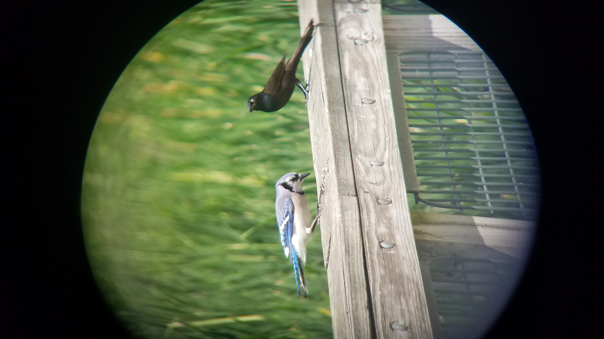

About Me Jaison Eccleston |
 |
Background: |
I am Jaison Eccleston. I recently bought a house in Dexter with my wife. I went to high school in Muskegon Michigan and lived in Grand Rapids for a few years before moving back to this area. Currently I work full time in Biomedical Engineering. |
This is my third computer science class. I've taken COSC 111 and 211 with Dr. Tehranipour. They were fun and I hope this will be as well. |
Interests & Hobbies: |
These are things I like to do when I have free time: |
|
Goals & Dreams: |
Originally, I planned on majoring in Chemistry, but I recently changed my mind and decided to Major in Computer Science instead. I am working towards either Computer Science [BA] or Applied Computer Science [BS]. I also plan on getting a Minor in Chemistry so that those classes do not go to waste. |
I enjoy studying martial arts and would like to study more. I would like to learn more about European sword martial arts as well as other styles of karate. I would also like to learn Filipino martial arts like Escrima. |